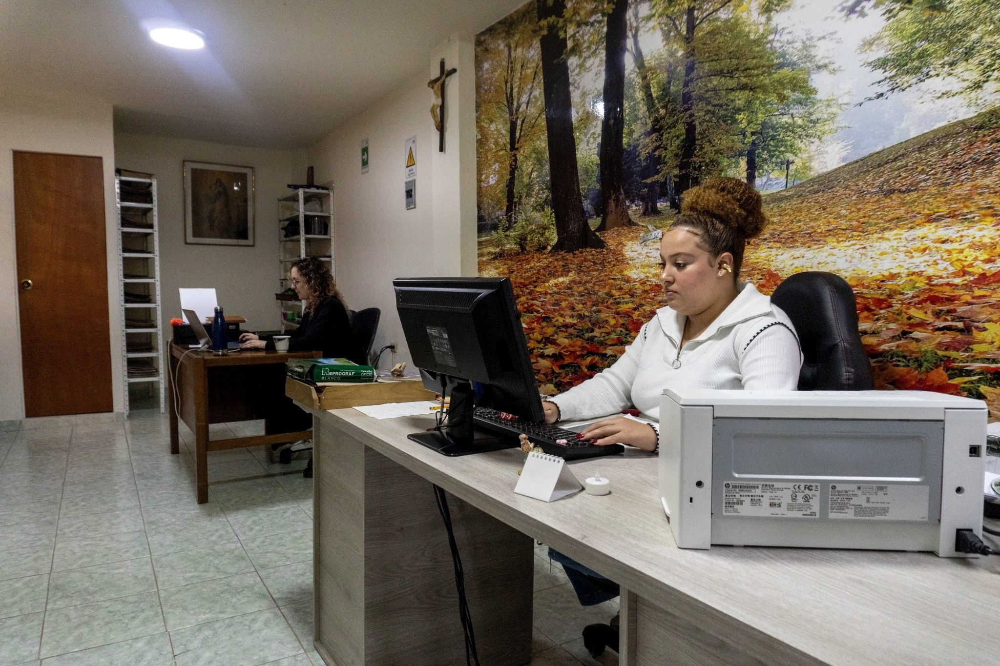
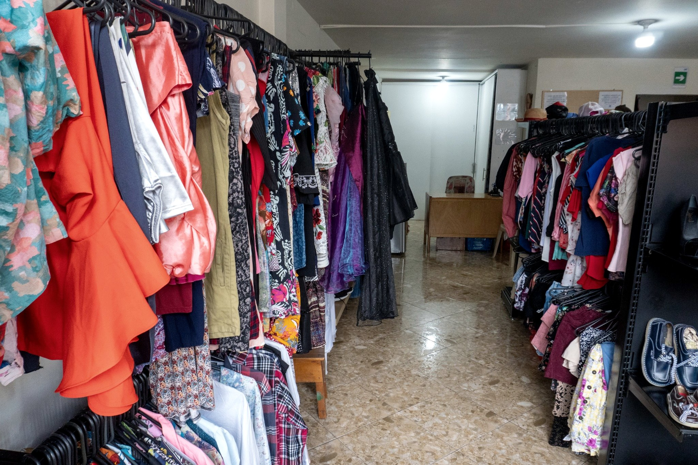
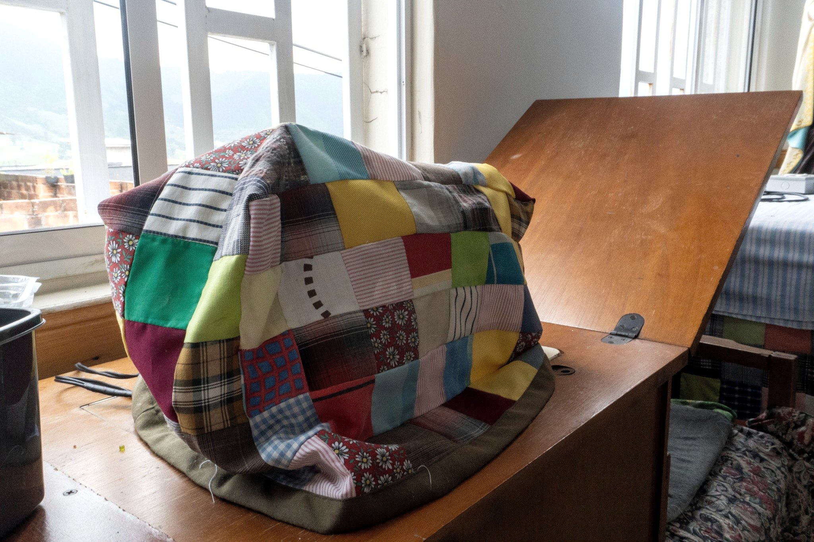
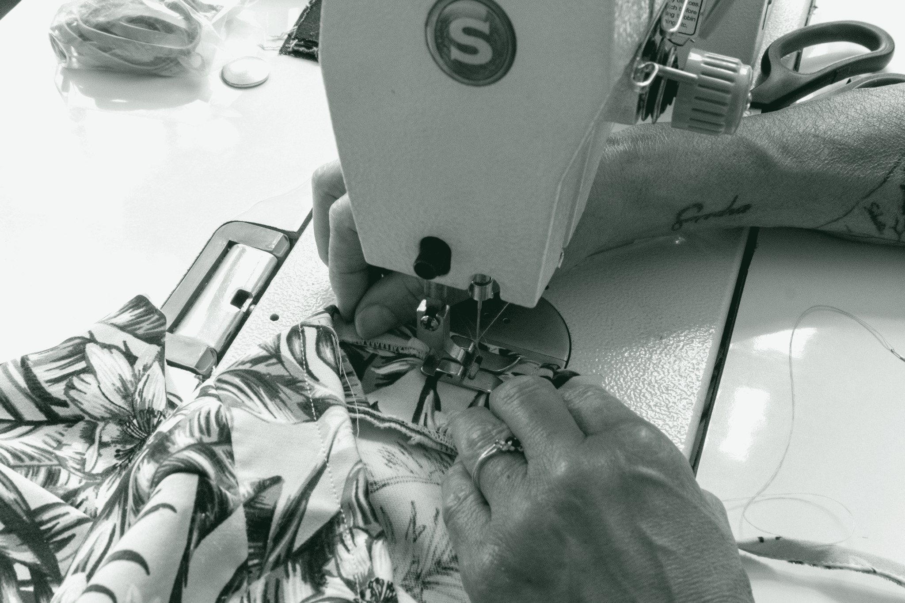
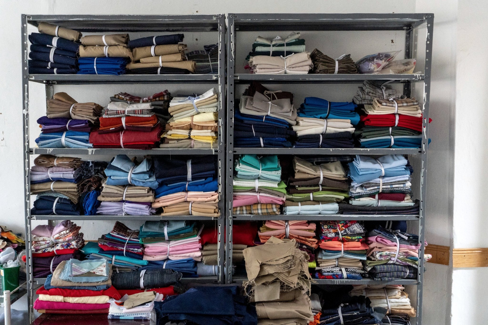
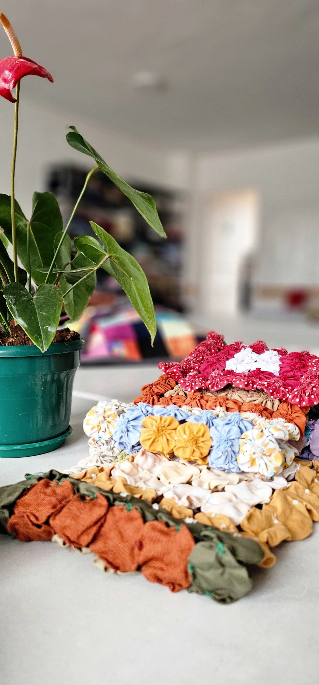

Acciones semanales, evidencias, reflexiones y próximos pasos.
Entradas
Semana 1
Diagnóstico de difusión e inicio de maquetación web
Esta semana inicié el acompañamiento a la Fundación con el objetivo de fortalecer su difusión digital.
El mayor problema no es la falta de trabajo social, sino la baja visibilidad, lo que afecta donaciones,
voluntariado y alianzas.
Acción 1 – Revisión de redes sociales y presencia web
Qué hice: revisé redes y presencia en internet.
Hallazgos: baja constancia en publicaciones y dificultad para administrar la web.
Mi opinión: se necesita un canal oficial claro que facilite contacto y donación.
Evidencias: (pega aquí links o sube capturas en /assets y enlázalas)
Acción 2 – Inicio de maquetación del sitio web
Qué hice: empecé la estructura tipo revista (historia, programas, cómo ayudar, contacto).
Resultado: primera versión de estructura lista para completar con fotos.
Dificultades: faltan fotos y datos finales para donación.
Evidencias: (captura del prototipo / link de la maqueta)
Impacto esperado
Con web + rutina de publicaciones se mejora visibilidad, confianza y se facilitan donaciones y voluntariado.
Próximos pasos
Validar textos de historia y programas con la administradora.
Definir método de donación (cuenta / Nequi / Daviplata) y reglas de recepción.
Subir fotos iniciales y publicar la Semana 2.
Semana 3–4
De la invisibilidad a la acción: difusión digital con propósito
Esta semana avancé en dos acciones clave para apoyar a la Fundación Compartamos (San Antonio de Prado):
primero, un diagnóstico realista de su difusión digital; y segundo, el inicio del prototipo web como
“punto central” donde cualquier persona pueda entender qué hace la fundación y cómo apoyar.
Actividad 1 (Semana 3) – Diagnóstico de difusión digital
Revisé redes sociales, claridad del mensaje, constancia de publicaciones, canales de contacto y qué tan fácil
es que un donante o voluntario pase de “ver” a “ayudar”. El hallazgo principal es que sí hay trabajo social
valioso (mercados, apoyo psicosocial, farmacia solidaria, ropero), pero no está organizado en un lugar central
con información actualizada y pasos claros para apoyar.
Reflexión ODS: aporta al ODS 17 (Alianzas) porque mejora canales para sumar donantes,
voluntarios y aliados; y al ODS 10 (Reducción de desigualdades) al aumentar el acceso a información
y apoyo comunitario.
Actividad 2 (Semana 4) – Inicio de maquetación del sitio web
Avancé con la estructura del sitio web: inicio, historia, programas, “Cómo ayudar” y contacto. El objetivo es
reducir fricción: que en menos de un minuto una persona entienda qué hace la fundación, cómo donar y cómo contactar.
Dejé espacios listos para fotos y testimonios, porque esto aumenta credibilidad y alcance.
Reflexión ODS: aporta al ODS 1 y ODS 2 al facilitar donaciones para mercados;
y al ODS 3 al visibilizar el acompañamiento psicosocial.
Evidencias (fotos)

Espacio administrativo: organización y atención.

Ropero solidario: donaciones que se transforman en apoyo.

Confección solidaria: forro para máquina de coser elaborado por voluntarias.

Trabajo comunitario: acciones con sentido.
Próximos pasos
Validar textos oficiales (historia y programas) con la administradora.
Definir método de donación y reglas de recepción (ropa/medicamentos).
Publicar un calendario simple de contenido (1–2 posts por semana en redes).
Galería
Imágenes de la Fundación.
Farmacia solidaria: organización y entrega de medicamentos mediante donación solidaria.

Ropero solidario – organización y prendas.
Trabajo textil y producción comunitaria.

Productos y artesanías (apoyo a sostenibilidad).
Sobre el proyecto
Este blog documenta el proceso de investigación y apoyo digital a la Fundación Compartamos.
Aquí registro acciones semanales, hallazgos, opiniones, evidencias y mejoras implementadas.